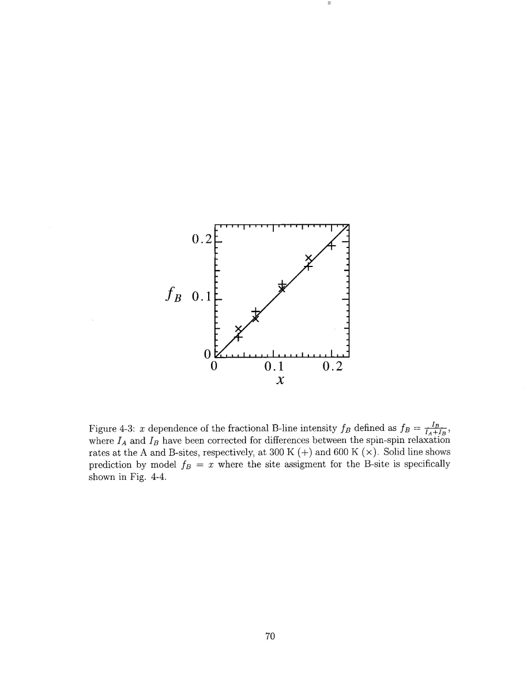
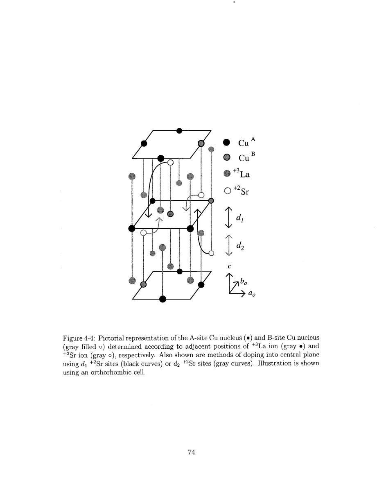
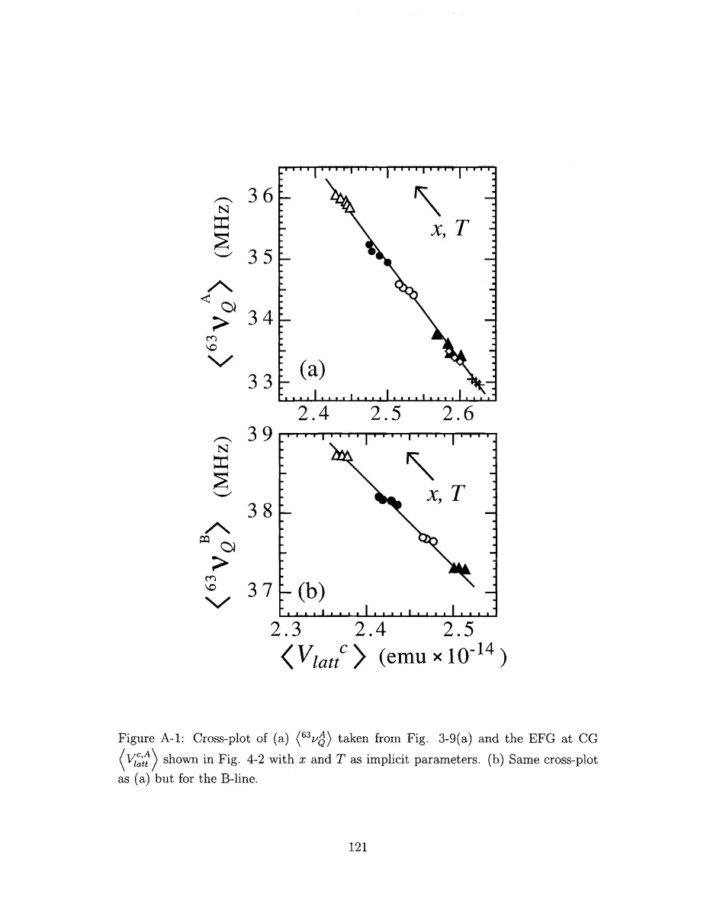

Singer · supplied source 2002 · chapter unit
4. Random Sr, EFG calibration and the B-line
Random donor positions generate real structural EFG broadening and support a geometric B-site assignment.
The question: How much of the Cu spectrum can alloy geometry explain before introducing electronic patches?
Before you start: the terms you need
- Nominal x: Sr atoms per LSCO formula unit, used as the average hole-doping label.
- Electric field gradient (EFG): curvature of the electric potential at a nucleus; determines the Cu quadrupole resonance.
- Knight shift: the nuclear resonance shift caused by electronic magnetic response, with orbital and spin contributions.
- T₁ and T₂: recovery of longitudinal nuclear magnetization and decay of transverse coherence; they answer different questions.
- Hyperfine form factor: the wavevector-dependent weighting through which a nucleus samples electronic spin fluctuations.
- HWHM: half width at half maximum; the thesis also defines an effective width from the second moment.
See → explain → check
Follow the idea in 3 pictures.
Picture 1 / 3
Average ions versus actual random ions
Look for: Replace an averaged ion by a distribution of actual configurations.
Swipe across the picture to read every label, or enlarge it below.
- Average valence model
- Random La/Sr occupations
Teaching schematic; no measured points or calibrated scales.
A mean EFG and an EFG distribution carry different information.
Picture 2 / 3
Assign B by adjacent Sr geometry
Look for: Separate the site label from the hole-distribution label.
Swipe across the picture to read every label, or enlarge it below.
- A-site environment
- B-site environment
Text comparison of the source's geometry; no Cu-site impurity substitution is depicted.
A and B can be different EFG environments within a shared electronic distribution.
Picture 3 / 3
Calibrate measured frequencies
Look for: Use a high-temperature cross-plot before assigning widths.
Swipe across the picture to read every label, or enlarge it below.
- Calculated lattice EFG
- Measured mean frequency
- Calibrated conversion
Teaching schematic; no measured points or calibrated scales.
Empirical calibration absorbs the chosen bare-Q convention.
Check the original: PDF p. 120 · PDF p. 121 · PDF p. 122
Explain it back.
Try answering aloud before opening the explanation.
Does a second NQR peak establish two electronic phases?
No. A different nearby donor geometry can create a second EFG environment.
Why is probability x/2 used at each La site?
There are two La sites per LSCO formula unit; their summed average Sr occupancy is x.
Go deeper Follow the full argument
Retain the disorder rather than average it away
A point-charge lattice sum responds strongly to the positions and valences of nearby ions. Replacing La and Sr by one average effective charge erases the fluctuations one is trying to understand. Singer instead occupies each La site randomly with Sr probability x/2, because there are two La sites per formula unit. Thousands of random configurations produce a distribution of lattice EFGs at the central Cu. The calculation uses measured or literature-calibrated lattice parameters, thermal expansion and fractional charges, plus an on-site contribution and empirical anti-shielding factors. Random ionic environments therefore produce a finite spectrum even before the donated holes are spatially modulated. This intrinsic width is not a spurious nuisance to discard: it is a necessary baseline for deciding how much additional electronic variation is supported.
PDF p. 61 · PDF p. 62 · PDF p. 64 · PDF p. 67 · PDF p. 68 · PDF p. 69
What is the B-site assignment?
The secondary Cu NQR feature is assigned to Cu nuclei with Sr at the specified adjacent La-layer positions above or below them. In the geometric construction that site's fractional abundance approximately follows x. The observed B-line intensity is corrected for its different transverse relaxation before comparison; uncorrected echo areas would overstate its abundance because B nuclei remain visible slightly longer. Similar frequency-dependent relaxation across A and B supports a shared underlying electronic variation superposed on different EFG environments. Singer also compares the different line splittings seen for other dopants and discusses local structural distortions around Sr. This evidence favors a structural assignment over calling the two peaks two macroscopic electronic phases. It does not mean the local dopant cannot affect electronic response at all.
Calibration and what it removes
Appendix A calibrates the relationship between calculated lattice EFG and measured center frequencies using the high-temperature region above local structural onset TQ. Separate A and B linear relations encode the effective on-site intercept and lattice coefficient. Those observable relations, rather than an isolated bare quadrupole moment or anti-shielding number, determine the final frequency mapping. This explains why changing the adopted Q while recalibrating the factors need not change the inferred patch radius. It is not permission to change Q without recalibration. The framework also contains choices about Cu–O covalency and donor geometry. The thesis reports a modest shift of inferred radius when an ionic rather than covalent partition is used. The appropriate conclusion is a self-consistent empirical disorder model with known assumptions, rather than an assumption-free atomistic reconstruction. Comparing its intrinsic width with the full observed line is the bridge to the next unit.
PDF p. 64 · PDF p. 67 · PDF p. 73 · PDF p. 120 · PDF p. 121 · PDF p. 122
Translate the mathematics Essential equations and their meaning
fB = IB/(IA + IB) ≈ x
Symbols: IA and IB are line intensities corrected for differences in transverse relaxation.
Source geometric assignment reproduces the approximate fractional B-line abundance; raw peak heights are not equivalent to these corrected areas.
Vlatt,αβ = Σj qj(3rjαrjβ−δ αβ rj²)/rj⁵
Symbols: qj are assigned lattice charges and rj locates each ion relative to Cu.
Source point-charge EFG sum; electronic screening/covalency enters the chosen charges and empirical calibration.
Read the evidence Guided original source pages

PDF p. 70

PDF p. 74

PDF p. 121
What the evidence supports—and where it stops
- The random-alloy model assumes no donor clustering beyond independent occupation statistics.
- Empirical anti-shielding and charge assignments do not constitute an ab initio solution.
Source version, reading coverage and preservation
Every substantive chapter and appendix was read from locally generated Windows OCR of the scanned original. Key figures, symbols, equations and boundaries were checked on readable full-page renders; PDF and printed page numbers agree at inspected locations.
Reviewed body pages: 10, 11, 12, 13, 14, 15, 16, 17, 18, 19, 20, 21, 22, 23, 24, 25, 26, 27, 28, 29, 30, 31, 32, 33, 34, 35, 36, 37, 38, 39, 40, 41, 42, 43, 44, 45, 46, 47, 48, 49, 50, 51, 52, 53, 54, 55, 56, 57, 58, 59, 60, 61, 62, 63, 64, 65, 66, 67, 68, 69, 70, 71, 72, 73, 74, 75, 76, 77, 78, 79, 80, 81, 82, 83, 84, 85, 86, 87, 88, 89, 90, 91, 92, 93, 94, 95, 96, 97, 98, 99, 100, 101, 102, 103, 104, 105, 106, 107, 108, 109, 110, 111, 112, 113, 114, 115, 116, 117, 118, 119, 120, 121, 122, 123, 124, 125, 126, 127, 128, 129, 130, 131, 132, 133, 134, 135, 136, 137. Bibliography pages 138–144 were not independently verified against every cited publication. Front matter was inspected for title, abstract and chapter mapping. The guide does not claim manual visual reading of every scan or exact transcription of all derivations; OCR is imperfect and the damaged abstract region was checked against the conclusions.
Source SHA-256: e5fdb96ea81a06f7a51624e02fa58319dc3d21926a030e06fbbedc7061f5937d. Original file bytes preserved locally, and in this room’s original download.
Thesis - Singer - 2002 - Nuclear resonance of electronic inhomogeneity in LSCO.pdf